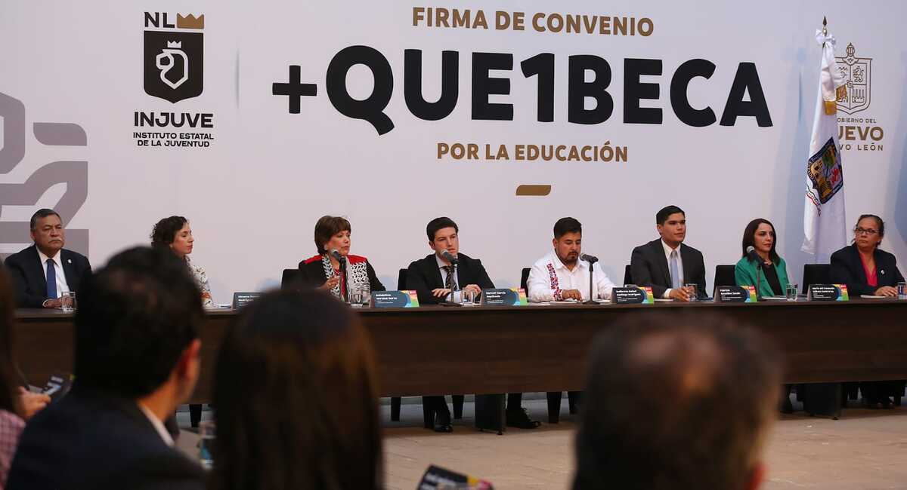

Si requieres de una beca para iniciar o continuar tus estudios de nivel básico, medio superior y superior en el Centro Estatal de Becas de Nuevo León puedes realizar el trámite de manera presencial o en línea.
El Centro Estatal de Becas de Nuevo León es una institución pública que tiene como objetivo otorgar becas a estudiantes de nivel básico, medio superior y superior que no cuenten con los recursos económicos suficientes para continuar sus estudios.
El Centro Estatal de Becas de Nuevo León ofrece becas para estudiantes de nivel básico, medio superior y superior que no cuenten con los recursos económicos suficientes para continuar sus estudios.
Para obtener una beca en el Centro Estatal de Becas de Nuevo León debes cumplir con los siguientes requisitos: